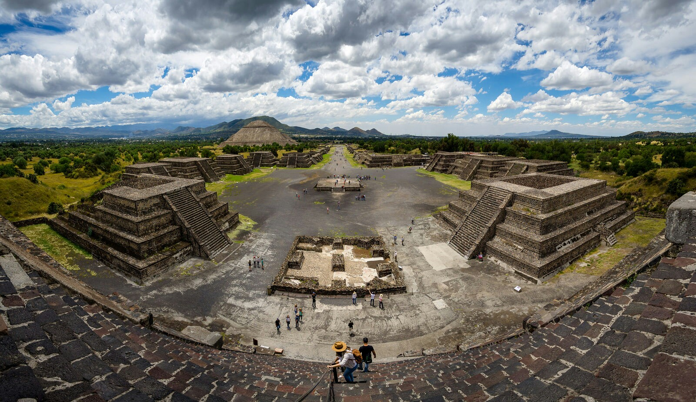

Take a life-changing trip to Teotihuacan Mexico to explore the ancient pyramids
and architecture! You can even appreciate the wonderful city from the sky in a hot
air balloon ride or even get up close and feed animals on a safari!

Picture of the Pyramids in Teotihuacan Mexico Picture of a Hot Air Balloon traveling over the Pyramids Picture of People feeding Giraffes on Reino Animal Safari
You should travel to Teotihuacan, Mexico to see historic pyramids and beautiful
art murals! These pyramids are the largest urban center in the ancient world
and influenced central Mexico as far south as Guatemala. The Reino Animal
Zoo and Park is not far and offers a safari with a large variety of animals
like giraffes, zebras, and camels. Also close by is a sky balloon ride over the
city. A trip to Teotihuacan is definitely worth the trip to see these amazing
attractions and be close enough to possibly add on a trip to Mexico City that is
only 30 miles northeast!
Pyramids
These pyramids stand tall at a height of 141 feet with a Talud-Tablero
architectural style. The pyramid of the Sun is the largest pyramid in
San Juan Teotihuacan, Mexico with the pyramid of the Moon in close second.
The name Teotihuacan was given by the Aztecs and means "place where the
gods were created". The population was estimated to have been around
100,000 people consisting of apartment compounds.
Avenue of the Dead: This is the city's main street that
runs for more than 2 miles and contains three major pyramid complexes!
Picture of Avenue of the Dead
Pyramid of the Moon: This pyramid is located on the
northern end of the site and was built in stages from 1 AD to 350 AD.
The pyramid stands 150 feet high with elevated platforms thought to
have been used for rituals. Tombs found in the pyramid even contain
human and animal sacrafices.
Picture of Pyramid of the Moon
Pyramid of the Sun: This pyramid is less than a half
mile south from the Pyramid of the Moon and is one of the largest
structures in the pre-Columbian New World. The pyramid of the Sun was
completed around 200 AD, but it was not until 1971 that an archaeological
team discovered a tunnel under the pyramid. They dug out the fill covering the
tunnel's entrance and discovered a cloverlead shaped chamber that was probably
used for rituals. A year later, a small treasure of offerings was found that
dated back to when the pyramids were built.
Picture of Pyramid of Sun
Temple of the Feathered Serpent: This pyramid is just south
Pyramid of the Sun and was completed sometime in the 3rd century. Although
smaller than the others along the Avenue of the Dead, this pyramid has
many intricate details.
Picture of Feathered Serpent Pyramid
Reino Animal Zoo and Park
Feeding the Animals: The Zoo and Park even allows you to
feed the animals out of your own hands! At the beginning you are
allowed to feed small animals like sheep and calves without pay! Then,
on the buses to the safari you can pay for food to feed large animals
like gariffes and zebras. After this safari, you can board another closed
bus to see lions and tigers. Although you can't directly feed this animals
for obvious safety issues, the staff will put some chicken liver along
edge of the bus so you can watch them eat right in front of you!
Picture of a boy feeding a zebra on the Reino Animal Safari
Sky Balloons
This balloons rides take you for a incredible scenic drive through
the valleys of Teotihuacan and its architecture.
Picture of Hot Air Balloon Ride over Pyramids
Other Attractions
These are some other attractions around the area.
Some other places close by Teotihuacan Mexico include,
Cathedral of the Divine Savior
Caves of Friendship
If you want to travel to Mexico City close by you could visit,
Ciudadela Market
National Palace
Chapultepec
National Museum of Anthropology
Chapultepec Castle
Reviews
Autumn Ewer "Incredible! Standing at the top of the
pyramids, you can feel the history within the grounds. Awe-inspiring."
Autumn's very own picture of the pyramids!
Paula V "This is a very nice place to take a short safari out of Africa...
they have a variety of animals and they all look healthy and well feed. I had
so much fun feeding the camels and giraffes, if you’re going with kids
they will love it as well."
Paula's very own picture feeding the giraffes!
Simon J "We paid £240 for the 2 of us to do a hot air
balloon over teotihaucan. (Book in advance ) included was - hotel pick up in
Mexico City from lobby (on time) , breakfast, coffee,cake, champagne and a
certificate, after a 45 minute to hr flight depending on the wind and drop off
back at hotel in Mexico City. Worth every penny ! To do a balloon ride in Britain
over some old field is £99 each !this was breathtaking, the baloon basket is
plit into 5 compartments, the middle is for the driver and the 4 corners each
old 2 people, so you have your own space. The driver aims and rotates the balloon
so everyone gets the perfect picture they want without any pushing or shoving.
Perfect set up with no stress and gorgeous pics. Can't recommend enough !"
Simon's view of another hot air balloon from the sky Simon's aerial view from the hot air balloon of Teotihuacan Simon's aerial view from the hot air balloon as they go over
the pyramids